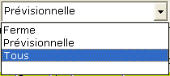
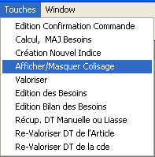
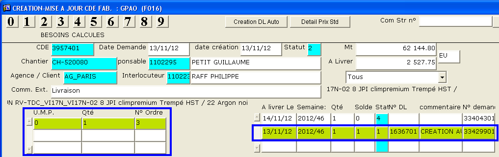

Retour
Accueil usine
Accueil agence
Prise en main
Requêtes (F2)

Sites Internet
|
|
FAQ - Cde usine |
| Comment consulter les articles restants à livrer ? | |||||||||||||
Dans l'écran de consultation des commandes
usine,
Dans l'image ci-contre on peut voir:
|
 |
||||||||||||
| Comment savoir si un article est passé en fabrication ? | |||||||||||||
Aller dans l'écran Besoins Cde Usine
Ce numéro est l'OF correspondant Dans ce cas, l'article courant est lié à l'OF 13990 |
 |
||||||||||||
| Comment modifier une commande usine si une demande de livraison (DL) existe déjà ? | |||||||||||||
| Supprimer la demande de livraison,
ou seulement les lignes a modifier.
Valider le changement (F5) Note : pour trouver la demande de livraison, afficher dans la commande usine les statuts de cadencement (Ferme) ou (Tous) 
|
|||||||||||||
| Comment modifier une commande usine si une DL existe déjà et qu'il n'est pas possible de modifier la DL car des expéditions ont déjà été faites? | |||||||||||||
| Il faut savoir que
si une DL est livrée ou partiellement livrée il ne sera pas possible de
supprimer une ligne de DL ou de commande. On ne peut que modifier les quantités. Si l'on souhaite changer d'article, il faudra créer une nouvelle ligne de commande et passer la quantité de l'ancien article à zéro ou à la quantité déjà livrée. Depuis l'écrans de consultation/modification de la commande usine. Afficher tous les statuts du cadencement. Afficher le colisage. (Menu Touches > Afficher/Masquer Colisage)  Se placer sur la ligne de cadencement ferme (statut 1). Correspondant à
une demande de livraison (DL)  Modifier la quantité du colisage et la quantité du cadencement. Valider le changement (F5) Modifier la quantité prévisionnelle (statut 4) Valider le changement (F5) |
|||||||||||||
Création à partir deIl est possible de récupérer les informations d'un document déjà
existant.
|
|||||||||||||